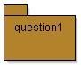
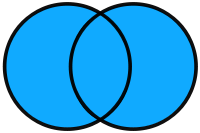
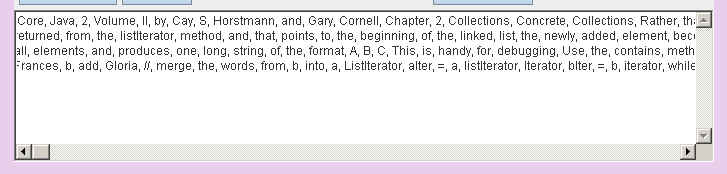
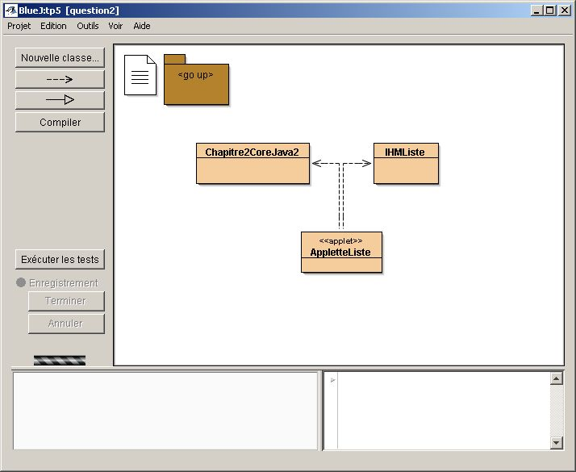
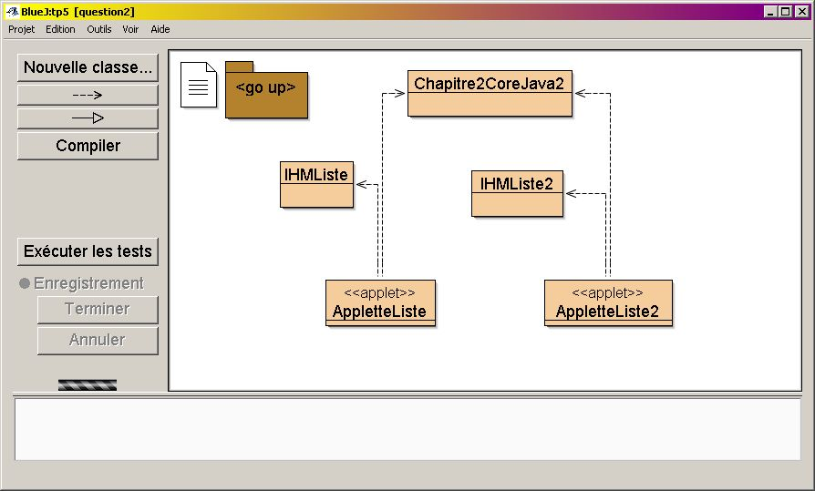

![[Image]](question2.jpg) .1) Les listes et dictionnaires
.1) Les listes et dictionnaires TP3
|
|
(L'énoncé de la question 1 est inspiré du tutorial de Sun sur les collections.)
Applette de Test
(essayez les 4 opérations avec, par exemple, 1 2 3 et 2 3 4 )
.1) Compléter la classe "Ensemble", nommée
Ensemble<T>
java.util.Vector<T>.
public boolean add(T t).2) Complétez la classe de tests
unitaires de la classe Ensemble<T>
(pour la méthode add() )
| POUR CE TP : Dès qu'une ou deux assertions sont vérifiées, passez à la suite du TP. Vous complèterez en travail personnel. |
.3) Enrichissez la classe Ensemble<T>
avec ces 4 opérations :
| 1) union ° | 2) intersection ° | 3) différence ° | 4) différence symétrique °° | |||
|  |
Attention ! e et e1 ne doivent pas être modifiés.
Chaque opération retourne un nouvel ensemble, comme le suggère cette signature de la méthode "union"
public Ensemble<T> union( Ensemble<? extends T>e1) ...
une utilisation possible :
Ensemble e = ...
System.out.println(" union de e et de e1 : " + e.union(e1));
.4) Enrichissez la classe de tests unitaires demandée en 1.2 (chaque méthode doit avoir été testée au moins une fois)
.5) Vérifiez le bon fonctionnement en complétant puis en utilisant l'applette nommée AppletteTestEnsemble
Soumettez cette question à l'évaluation Jnews.
.1) Les listes et dictionnaires
Le texte de la fenêtre de l'applette ci-dessous est une liste constituée de mots extraits du chapitre 2 de CoreJava2 consacré au "LinkedList" (les mots sont rassemblés dans une constante de type "String", nommée CHAPITRE2 dans la classe Chapitre2CoreJava2).
L'objectif est de pouvoir faire différents traitements sur cette liste de mots.
Complétez la classe Chapitre2CoreJava2 en développant ces deux méthodes de classe :
public static List<String> listeDesMots()
public
static Map<String,Integer> occurrencesDesMots( List<String> liste )

.2) Complétez la classe IHMListe afin d'implanter
toutes les actions associées aux noms des boutons.
Certaines de ces actions sont déjà programmées. Il ne vous reste que
Retirer, Croissant, et Décroissant à programmer.
rechercher : recherche du mot tapé dans la zone de saisie; le booléen, le résultat de la recherche est affiché. La touche Entrée du clavier a le même effet qu'une action effectuée sur ce bouton.
retirer : retrait de tous les mots commençant par le préfixe de la zone de saisie; le booléen, résultat du retrait est affiché.
croissant : tri du texte selon cet ordre; utilisez Collections.sort.
décroissant : tri du texte selon cet ordre; écrivez une classe interne implémentant l'interfaceComparator<T>.
occurrence : obtention du nombre d'occurrences du mot présent dans la zone de saisie
une IHM au comportement attendu :
AIDE : Croissant et Décroissant ne sont pas des boutons ; quel listener leur faut-il ?
Recopiez dans IHMListe2 les deux méthodes d'IHMListe complétées à la question 2.2, puis ...
.3) Complétez maintenant, la
classe IHMListe2 afin d'implanter la possibilité d'annuler les
actions de modification du texte comme le retrait ou le tri sur
la liste.
L'idée est de stocker l'état de
la 'liste de String' à chaque action ('retirer' , 'croissant' ,
'decroisssant') dans une pile (java.util.Stack<E>) . Et le
dernier état de la 'liste de String' empilé est restitué à
chaque action 'annuler'. Quand la pile est vide le bouton
'annuler' est sans effet.
Attention de bien mettre à jour la table des occurrences.

comportement attendu :
AIDE : Si le comportement n'est pas celui attendu, demandez-vous si vous avez véritablement sauvegardé le CONTENU de la liste ...
Soumettez cette question à l'évaluation Jnews.
![[Image]](question3.jpg) .1) Le pattern Fabrique/Factory
.1) Le pattern Fabrique/Factory
Selon la bibliographie habituelle, l'objectif
du Pattern Factory est de définir une interface pour la
création d'un objet,
en laissant aux classes implémentant cette interface le choix
de la classe à instancier pour cet objet.
Interface Factory<T>, l'implémentation de la méthode create est laissée aux "clients"
package question3; public interface Factory<T>{ public T create(); }exemple : TextFactory
public class TextFactory1 implements Factory<TextComponent>{ public TextComponent create(){ return new TextArea(100,50); } } public class TextFactory2 implements Factory<TextComponent>{ public TextComponent create(){ return new TextField(40); } }Un usage :public void utilisation( Factoryfabrique ){ TextComponent tc = fabrique.create(); tc.setText( "essai" ); } utilisation( new TextFactory1() ); utilisation( new TextFactory2() ); Proposez les fabriques d'ensembles HashSetFactory, (en utilisant la classe concrète java.util.HashSet) et TreeSetFactory, (en utilisant la classe concrète java.util.TreeSet).
.2) Complétez la classe de Tests unitaires
Soumettez cette question à l'évaluation Jnews.